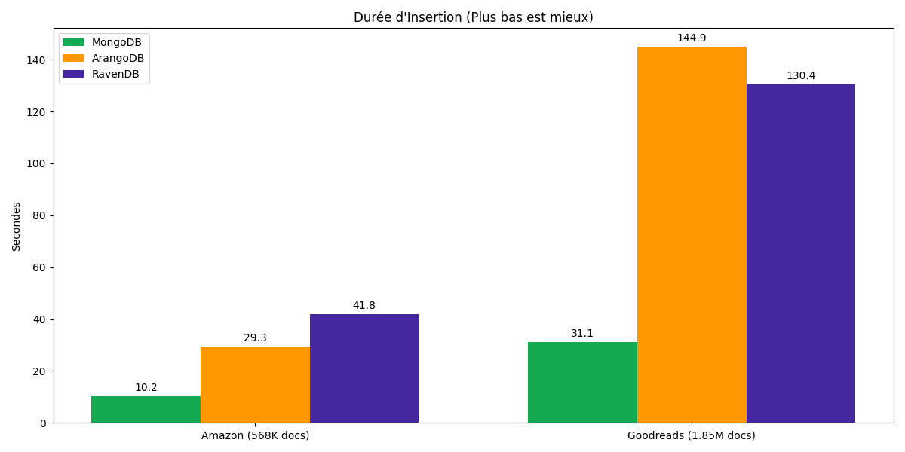
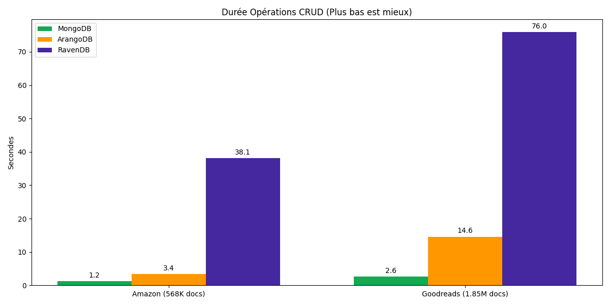
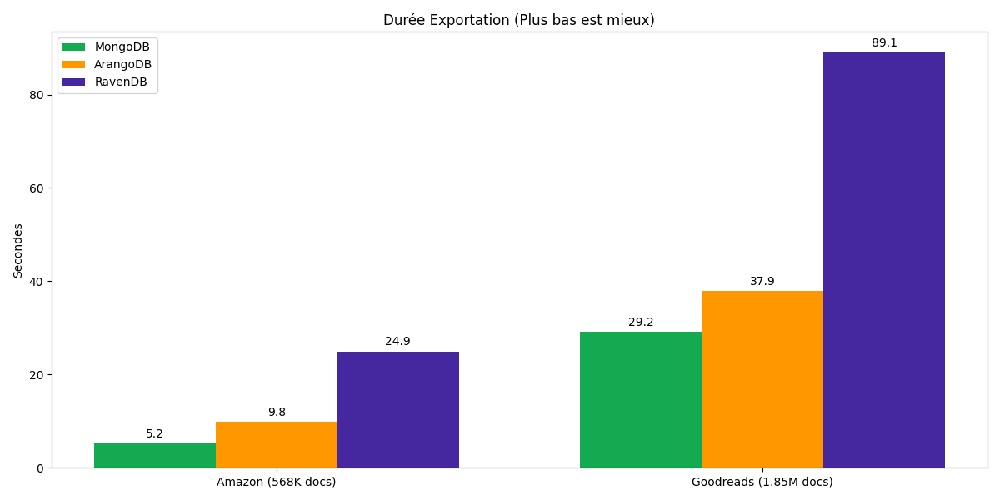
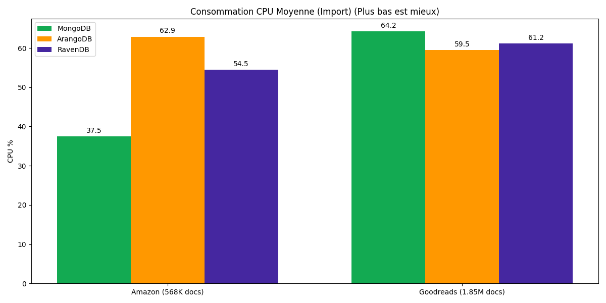
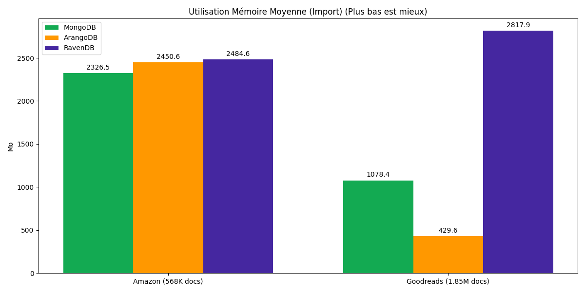

Étude n°1 : Rapport de Benchmark Bases de Données Orientées Documents
Comparaison de MongoDB vs ArangoDB vs RavenDB
1. Introduction
Cette première étude évalue les performances de trois bases de données NoSQL orientées documents majeures :
- MongoDB : Le leader du marché, connu pour sa performance et sa flexibilité (BSON).
- ArangoDB : Une base multi-modèle (Document, Graphe, Clé-Valeur) native.
- RavenDB : Une base ACID transactionnelle orientée documents, populaire dans l'écosystème .NET.
L'objectif est de comparer leur comportement sur des opérations standard (CRUD, Import, Export) avec des jeux de données réels.
2. Méthodologie
2.1 Jeux de Données
Les tests ont été réalisés sur deux volumes de données :
- Amazon Reviews (568K documents, ~367 Mo)
- Goodreads Reviews (1.85M documents, ~1.8 Go)
2.2 Protocole de Test
L'environnement Dockerisé a exécuté les étapes suivantes pour chaque base :
- Import (Bulk Insert) : Chargement de l'ensemble du dataset.
- CRUD (Read/Update/Delete) : Exécution de requêtes complexes (filtres sur champs texte/numérique), mises à jour et suppressions.
- Export : Extraction de toutes les données vers un fichier JSON.
- Monitoring : Mesure continue du CPU et de la RAM via
docker stats.
3. Résultats et Analyse
3.1 Performance d'Insertion
MongoDB démontre une supériorité nette sur l'ingestion massive de données.
-
Amazon (568K) :
- MongoDB : 10.23s (~55 500 docs/s)
- ArangoDB : 29.32s (~19 400 docs/s)
- RavenDB : 41.83s (~13 600 docs/s)
-
Goodreads (1.85M) :
- MongoDB : 31.05s (~59 500 docs/s)
- RavenDB : 130.39s (~14 100 docs/s)
- ArangoDB : 144.93s (~12 700 docs/s)
Analyse : MongoDB est 3 à 5 fois plus rapide que ses concurrents pour l'écriture. RavenDB et ArangoDB offrent des performances similaires, mais nettement en retrait sur ce type de charge massive brute.
Tableau Comparatif : Insertion
| Opération |
MongoDB |
ArangoDB |
RavenDB |
Gagnant |
| Amazon (568K) |
10.23s |
29.32s |
41.83s |
MongoDB (x2.8) |
| Goodreads (1.85M) |
31.05s |
144.93s |
130.39s |
MongoDB (x4.2) |
| Débit Max |
~59.5k ops/s |
~19.4k ops/s |
~14.1k ops/s |
MongoDB |


3.2 Performance CRUD et Export
Sur les opérations mixtes (Lecture, Mise à jour, Export), MongoDB confirme son avance.
-
CRUD (Goodreads) :
- MongoDB : 2.56s (quasi-instantané)
- ArangoDB : 14.58s
- RavenDB : 75.97s (très lent)
-
Export (Goodreads) :
- MongoDB : 29.17s
- ArangoDB : 37.87s
- RavenDB : 89.08s
Analyse : RavenDB souffre particulièrement sur les opérations CRUD et d'export dans cette configuration, étant jusqu'à 30x plus lent que MongoDB sur le CRUD. ArangoDB se défend mieux mais reste en seconde position.
Tableau Comparatif : CRUD & Export
| Opération |
MongoDB |
ArangoDB |
RavenDB |
Écart |
| CRUD Amazon |
1.21s |
3.41s |
38.07s |
Mongo 30x plus rapide que Raven |
| CRUD Goodreads |
2.56s |
14.58s |
75.97s |
Mongo 5.7x plus rapide qu'Arango |
| Export Goodreads |
29.17s |
37.87s |
89.08s |
Mongo 3x plus rapide que Raven |


3.3 Consommation des Ressources
L'efficacité énergétique (CPU/RAM par document traité) varie considérablement.
- CPU : Les trois bases consomment entre 55% et 65% de CPU lors de l'import. Cependant, comme MongoDB finit le travail 5x plus vite, son coût CPU total (CPU * Temps) est radicalement plus faible.
- Mémoire :
- RavenDB utilise le plus de mémoire (~2.8 Go sur Goodreads).
- ArangoDB semble avoir une gestion mémoire très agressive ou efficace (~430 Mo moyens sur Goodreads, mais 2.4 Go sur Amazon ? Possible effet de Garbage Collection, à vérifier).
- MongoDB utilise une quantité modérée de RAM (~1-2.3 Go) mais l'utilise très efficacement pour le débit.
Tableau Comparatif : Ressources (Import)
| Métrique |
MongoDB |
ArangoDB |
RavenDB |
Observation |
| CPU Moyen |
37% - 64% |
~60% |
55% - 61% |
Similaire, mais Mongo finit plus vite |
| RAM Moyenne (Go) |
1.1 - 2.3 GB |
0.4 - 2.4 GB |
2.5 - 2.8 GB |
RavenDB consomme le plus |
| Efficacité |
Haute |
Moyenne |
Basse |
Mongo a le meilleur ratio Perf/Ressource |


4. Conclusion
Pour des charges de travail de type "Document Store" pur (Stockage JSON, requêtes simples) :
- Le Gagnant : MongoDB. Il surclasse ArangoDB et RavenDB sur toutes les métriques de performance pure (Vitesse d'insertion, Latence CRUD, Export). C'est le choix par défaut pour la performance brute.
- ArangoDB : Bien que moins performant en pur document, sa force réside dans son approche multi-modèle (Graphe). Il est un "bon deuxième" acceptable si les besoins graphes sont anticipés (objet de l'Étude n°3).
- RavenDB : Se montre le moins performant dans ce benchmark spécifique. Il peut avoir d'autres atouts (transactions ACID, intégration .NET) qui ne sont pas mis en valeur par ce test de performance brute.
Recommandation : Utilisez MongoDB pour les applications nécessitant un haut débit d'écriture et de lecture de documents. Considérez ArangoDB si la flexibilité du modèle de données (Joins, Graphes) est une priorité sur la performance brute.